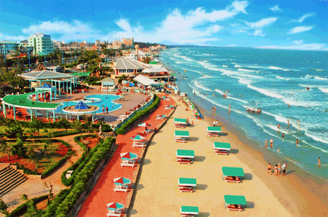
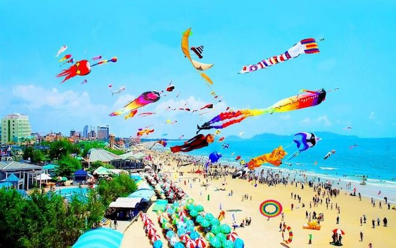

Vũng Tàu là thành phố biển thuộc tỉnh Bà Rịa – Vũng Tàu. Bãi Sau là bãi biển thường được khách du lịch Vũng Tàu lựa chọn để tắm biến nhất. Ngoài ra, Vũng Tàu cũng có những điểm tham quan đáng chú ý như Tượng Chúa Kitô Vua trên núi Nhỏ, Chùa Thích Ca Phật Đài và tòa Bạch Dinh nằm sát biển. Lễ hội Nghinh Ông và lễ hội Dinh Cô là hai lễ hội văn hóa nổi bật nhất của Vũng Tàu.
Tổng quan du lịch Vũng Tàu
Đến với Vũng Tàu bạn sẽ có cảm giác bình yên, dễ chịu với những con đường rộng rãi, thoáng đãng. Dưới là biển xanh, trên là những ngọn núi to, núi nhỏ, cùng những ngôi chùa thanh tịnh… Tất cả tạo nên một Vũng Tàu đầy ma lực, một thành phố Vũng Tàu không chỉ hiền hòa bình dị mà còn vô vàn những danh lam thắng cảnh nổi tiếng.
Khí hậu
Bà Rịa - Vũng Tàu thuộc vùng khí hậu nhiệt đới gió mùa, một năm chia hai mùa rõ rệt: Mùa mưa bắt đầu từ tháng 5 đến tháng 10, thời gian này có gió mùa Tây Nam; mùa khô bắt đầu từ tháng 11 đến tháng 4 năm sau, thời gian này có gió mùa Đông Bắc. Nhiệt độ trung bình hàng năm là 27°C, tháng thấp nhất khoảng 24,8°C, tháng cao nhất khoảng 28,6°C.
Thời điểm du lịch Vũng Tàu
Ở Vũng Tàu quanh năm là mùa du lịch vì nhiệt độ không khi nào quá lạnh hay quá nóng. Bạn chỉ cần theo dõi bản tin dự báo thời tiết để tránh du lịch Vũng Tàu khi có mưa bão. Ngoài ra, vào ngày cuối tuần và các dịp lễ tết, Vũng Tàu thu hút rất đông khách du lịch, giá cả các dịch vụ đều tăng cao.
Di chuyển đến Vũng Tàu
Thành phố biển Vũng Tàu cách TP. Hồ Chí Minh chỉ 125km, là địa điểm tuyệt vời cho chuyến du lịch ngắn ngày của bạn. Hiện nay có 3 phương tiện dành cho các chuyến du lịch bụi: tự đi xe máy, đi ô tô khách hoặc tàu cánh ngầm.